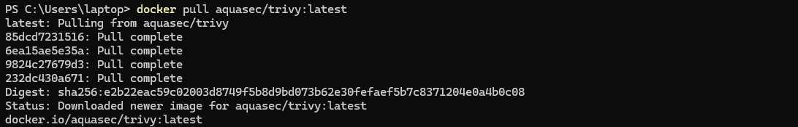
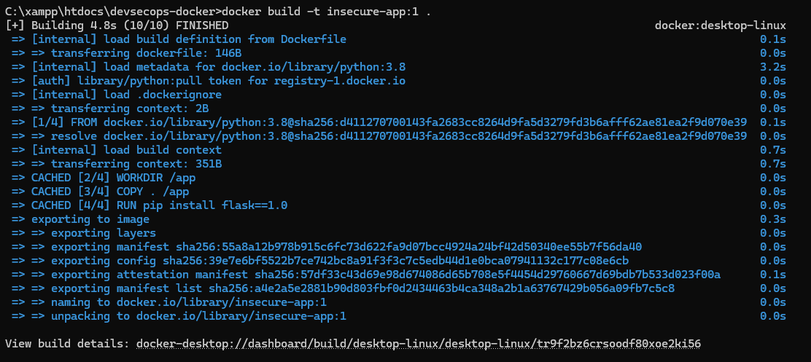
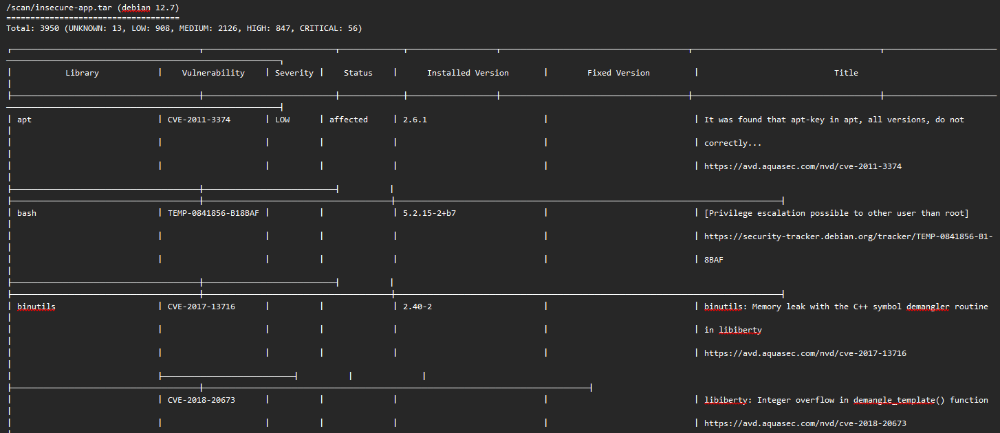
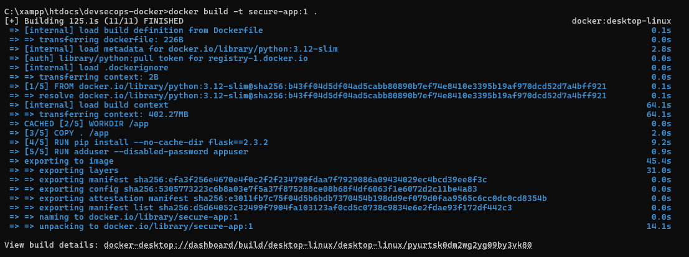
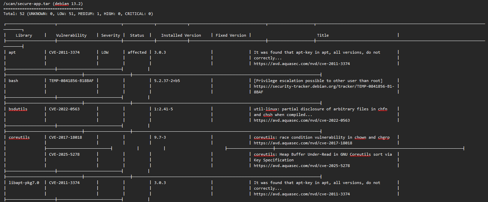

Pada topik DevSecOps ini, pembahasan berfokus pada cara mengamankan Docker image menggunakan Trivy, sebuah vulnerability scanner yang mampu mendeteksi CVE, misconfiguration, serta risiko keamanan lain dalam container. Artikel ini memandu langkah-langkah praktis dari persiapan hingga integrasi ke pipeline CI/CD.
1. Konsep Dasar Keamanan Docker
Keamanan container mencakup perlindungan pada beberapa komponen penting seperti:
- Image — base image, library, dependency.
- Container runtime — proses di dalam container.
- Host OS — kernel yang digunakan bersama.
- Registry — tempat penyimpanan image.
- CI/CD pipeline — proses build dan distribusi image.
2. Ancaman Umum pada Ekosistem Docker
- Vulnerable base image — image lama atau tak terverifikasi.
- Misconfiguration — container berjalan sebagai root, port terbuka, tidak ada batasan resource.
- Malicious image injection — image palsu di registry publik.
- Sensitive data exposure — password/API key tersimpan di Dockerfile.
3. Trivy: Fungsi Singkat
Trivy dapat mendeteksi:
- Vulnerabilities (CVE) pada package dan library image
- System package vulnerabilities
- Misconfiguration
- Secrets dan IaC issues
Severity: Critical, High, Medium, Low, Unknown.
4.1 Flow Praktik : Tahap Persiapan
Sebelum mulai, pastikan Docker dan Trivy terinstall pada mesin Anda. Periksa versi dengan perintah:
Jika belum terpasang, Anda bisa menjalankan Trivy melalui image Docker (alternatif jika tidak ingin menginstal langsung):
Langkah ini memastikan environment siap untuk membangun dan menscan image.
4.2 Flow Praktik : Membuat Folder Proyek, Dockerfile, dan Aplikasi (Tidak Aman)
1. Buat folder proyek (contoh pada Windows/XAMPP)

2. Membuat Dockerfile
Di dalam folder itu buat Dockerfile sengaja tidak aman:
3. Membuat app.py
Dan buat app.py sederhana:
Tujuan menyiapkan image yang rentan adalah untuk demonstrasi scanning dan hardening.
4.3 Flow Praktik : Membuat Docker Image (Tidak Aman)
Build image:
Untuk kemudahan scanning di Windows (menggunakan Trivy di container) Anda bisa menyimpan image ke file TAR:
4.4 Flow Praktik : Scan Image dengan Trivy (Tidak Aman)
1. Scan menggunakan image Trivy dan simpan output (table & json)
2. Analisis Kerentanan
Gunakan perintah berikut untuk melihat berapa kerentanan yang ditemukan:

Atau langsung buka file trivy-output-insecure.txt:
4.5 Flow Praktik : Perbaiki Image (Hardening / Aman)
Langkah-langkah hardening pada Dockerfile:
- Ganti base image ke minimal (python:3.12-slim).
- Perbarui dependency (flask==2.3.2).
- Gunakan
--no-cache-dirpada pip untuk mengurangi layer cache. - Tambahkan non-root user dan paksa container berjalan non-root.
Contoh Dockerfile yang diperbaiki:
Perubahan ini menurunkan jumlah package rentan dan menghilangkan eksposur akibat dependency lama atau konfigurasi berbahaya.
4.6 Flow Praktik : Membuat Ulang Docker Image (Aman)
1. Rebuild image dari Dockerfile
2. Simpan ulang image ke TAR
4.7 Flow Praktik : Scan Ulang Image dengan Trivy (Aman)
1. Scan dengan Trivy dan simpan output
2. Analisis Kerentanan
Gunakan perintah berikut untuk melihat berapa kerentanan yang ditemukan:

Atau langsung buka file trivy-output-secure.txt:
Biasanya setelah hardening severity HIGH/CRITICAL akan hilang dan jumlah MEDIUM/LOW berkurang secara signifikan.
4.8 Flow Praktik : Perbandingan Hasil Scan
Untuk menghitung dan membandingkan severity sebelum & sesudah (menggunakan PowerShell di Windows):

Kemudian lihat hasil:

Contoh hasil nyata (dari praktik materi) menunjukkan HIGH/CRITICAL/UNKNOWN hilang dan LOW turun drastis (mis. dari 906 → 51) serta MEDIUM turun signifikan (mis. dari 2130 → 2). Ini menandakan hardening berhasil menurunkan risiko.
6. Integrasi Trivy ke GitHub Actions (Security Gate)
1. Membuat Repository GitHub (Langkah Awal)
Buat repository baru
- Masuk ke GitHub: https://github.com
- Klik tombol New repository
- Isi:
- Repository name: devsecops-week7
- Description: Repository untuk tugas DevSecOps — Docker Security dengan Trivy
- Visibility: Public
- Klik Create repository
Repo kamu sekarang siap digunakan.
2. Push kode aplikasi ke GitHub
Jalankan di Git Bash / CMD:
Setelah push, seluruh kode aplikasi akan muncul di repository GitHub.

3. Tambahkan Workflow GitHub Actions untuk Trivy
Buat file trivy.yml
Isi:
Workflow ini akan menjalankan Trivy dan memaksa pipeline gagal jika ditemukan vulnerability High atau Critical, sehingga menjadi security gate yang efektif.
4. Menjalankan Pipeline
Setelah file workflow dipush, buka tab Actions di GitHub untuk memonitor run; file output (artifact) mis. trivy-output.txt dapat diunduh untuk dokumentasi.
Masuk ke:
GitHub → Actions

Di bagian output akan terlihat:
- Hasil trivy-output: https://github.com/kimookoii/devsecops-week7/actions/runs/19791646209/artifacts/4714895571
- Isi trivy-output: trivy-output.txt


7. Laporan
7.1 Sebelum & sesudah hardening
1. Dockerfile Sebelum Hardening
Masalah Utama (Sebelum):
- Base image lama (python:3.8)
- Tidak lagi mendapat update reguler & patch keamanan.
- Mengandung banyak system package rentan. - Flask versi usang (1.0)
- Memiliki beberapa kerentanan (CVE) High/Medium.
- Tidak sesuai standar keamanan modern. - Tidak ada non-root user
- Container berjalan sebagai root → risiko privilege escalation tinggi. - Tidak ada optimasi layer
- pip install tanpa --no-cache-dir → layer lebih besar → surface attack lebih luas.
Perintah Build & Versi Image (Sebelum):
2. Dockerfile Setelah Hardening
Perbaikan yang Dilakukan (Sesudah):
- Base image diganti ke python:3.12-slim
- Lebih baru, aman, ringan (slim).
- Mengurangi jumlah paket rentan secara signifikan. - Upgrade Flask ke versi aman (2.3.2)
- Semua CVE pada Flask 1.0 teratasi dalam versi ini. - Menambahkan non-root user (appuser)
- Membatasi akses container → mengurangi risiko injeksi, RCE, dan pengambilalihan sistem. - Menambahkan --no-cache-dir
- Mengurangi ukuran layer dan artefak yang tidak diperlukan.
Perintah Build & Versi Image (Sesudah):
Kesimpulan Analisis:
Hardening berhasil menurunkan risiko keamanan secara signifikan. Base image lebih baru dan lebih kecil, dependency diperbarui, serta container tidak lagi berjalan sebagai root. Kombinasi perubahan ini menyebabkan jumlah CVE High/Critical hilang, dan total kerentanan turun drastis pada hasil scan Trivy.
7.2 Screenshot Output Trivy
Pada tahap ini dilakukan proses dokumentasi hasil pemindaian kerentanan menggunakan Trivy baik sebelum maupun sesudah dilakukan hardening pada Dockerfile. Dokumentasi berupa screenshot atau file teks diperlukan untuk menunjukkan perubahan jumlah kerentanan secara jelas serta mendukung analisis yang telah dilakukan.
1. Screenshot Hasil Scanning Sebelum Perbaikan (Insecure Image)
File: trivy-output-insecure.txt
Hasil pemindaian menunjukkan bahwa image insecure-app:1 mengandung banyak kerentanan, termasuk beberapa yang berada pada tingkat High dan Critical, terutama berasal dari penggunaan base image lama dan package Flask versi usang.
2. Screenshot Hasil Scanning Setelah Perbaikan (Secure Image)
File: trivy-output-secure.txt
Pada hasil pemindaian ulang terhadap image secure-app:1, terlihat bahwa kerentanan High dan Critical telah hilang, serta jumlah kerentanan Medium dan Low turun sangat signifikan. Hal ini menunjukkan bahwa proses hardening pada Dockerfile berhasil mengurangi risiko keamanan.
3. Screenshot dari GitHub Actions (Jika Menggunakan CI/CD)
File: trivy-output.txt
Tampilkan bagian di mana Trivy menjalankan pemeriksaan keamanan serta artifact yang dihasilkan, seperti file trivy-output.txt. Dokumentasi ini menunjukkan bahwa mekanisme security gate di CI/CD pipeline telah berjalan dengan baik dan mampu mengidentifikasi kerentanan secara otomatis setiap kali terjadi perubahan kode.
7.3 Penjelasan CVE
1. CVE-2025-53014 – ImageMagick (CRITICAL)
Kerentanan ini ditemukan pada paket ImageMagick dan berkaitan dengan heap buffer overflow saat memproses file gambar tertentu. Eksploitasi kerentanan ini dapat memungkinkan penyerang mengeksekusi kode berbahaya atau menyebabkan aplikasi crash. Versi yang lebih aman tersedia pada 8:6.9.11.60+dfsg-1.6+deb12u4, sehingga pembaruan ke versi tersebut direkomendasikan.
Referensi: https://avd.aquasec.com/nvd/cve-2025-53014
2. CVE-2023-6879 – libaom3 (CRITICAL)
Kerentanan ini terjadi pada library libaom3, terkait heap-buffer-overflow ketika terjadi perubahan ukuran frame video. Masalah ini memungkinkan pembacaan atau penulisan memori di luar batas, yang dapat mengarah pada crash atau potensi eksekusi kode. Pembaruan ke versi patch terbaru disarankan untuk menghilangkan risiko.
Referensi: https://avd.aquasec.com/nvd/cve-2023-6879
3. CVE-2023-5841 – libopenexr (CRITICAL)
Kerentanan ditemukan pada libopenexr, khususnya pada proses parsing data deep scanline yang dapat menyebabkan heap overflow. Jika dieksploitasi, hal ini memungkinkan penyerang menyebabkan crash atau menjalankan kode berbahaya melalui file gambar EXR yang dibuat khusus. Pengguna dianjurkan melakukan update ke versi patch yang telah memperbaiki masalah ini.
Referensi: https://avd.aquasec.com/nvd/cve-2023-5841
7.4 Penjelasan Mitigasi
Untuk mengatasi kerentanan yang ditemukan, beberapa langkah mitigasi telah diterapkan pada Dockerfile dan proses build:
1. Upgrade Dependency
Dependency rentan seperti Flask 1.0 diperbarui ke versi yang aman (Flask 2.3.2). Pembaruan ini menghilangkan CVE yang ditemukan pada versi lama dan memastikan aplikasi menggunakan library yang sudah diperbaiki oleh vendor.
2. Mengganti Base Image ke Versi Minimal & Modern
Base image yang sebelumnya menggunakan python:3.8 diganti menjadi python:3.12-slim.
- Mitigasinya:
- Mengurangi jumlah paket bawaan (lebih sedikit attack surface),
- Mendapat patch keamanan terbaru,
- Menghilangkan kerentanan dari paket turunan Debian lama.
3. Menjalankan Container sebagai Non-Root User
Penambahan user appuser membuat container tidak lagi berjalan sebagai root.
- Dampak mitigasi:
- Mengurangi risiko privilege escalation,
- Membatasi akses ketika terjadi exploit terhadap aplikasi.
4. Menghapus Cache & Layer Tidak Perlu
Menggunakan --no-cache-dir pada pip mengurangi file tidak penting dalam image.
- Keuntungannya:
- Image lebih kecil,
- Mengurangi potensi file yang dapat disalahgunakan.
5. Memastikan Dependency Tidak Menggunakan Creds di Dockerfile
Best practice seperti tidak memasukkan secret atau API key di Dockerfile diterapkan untuk menghindari bocornya credential saat image dibagikan atau dipush ke registry.
Kesimpulan
Praktik DevSecOps Minggu 7 menunjukkan bagaimana keamanan container dapat ditingkatkan dengan melakukan scanning dan hardening terhadap Docker image. Dengan menggunakan Trivy, image awal yang dibuat dari base image lama (python:3.8) dan dependency usang (Flask 1.0) terbukti mengandung banyak kerentanan, termasuk beberapa yang bersifat High dan Critical.
Setelah dilakukan hardening—mengganti base image ke python:3.12-slim, memperbarui dependency, menambahkan user non-root, dan mengoptimalkan Dockerfile—hasil scan ulang menunjukkan bahwa semua kerentanan tingkat High dan Critical berhasil dihilangkan, sementara kerentanan Medium dan Low turun drastis. Hal ini membuktikan bahwa update dependency dan konfigurasi container yang benar sangat efektif dalam menurunkan risiko keamanan.
Integrasi Trivy ke GitHub Actions kemudian memastikan bahwa proses scanning berjalan otomatis setiap ada perubahan kode. Dengan mekanisme security gate, pipeline akan gagal jika ditemukan kerentanan serius, sehingga mampu mencegah image rentan masuk ke lingkungan produksi.
Secara keseluruhan, praktik ini menegaskan bahwa keamanan container harus dimulai sejak tahap build, dilakukan secara berkelanjutan, dan diotomatisasi melalui CI/CD agar aplikasi tetap aman dari ancaman kerentanan.